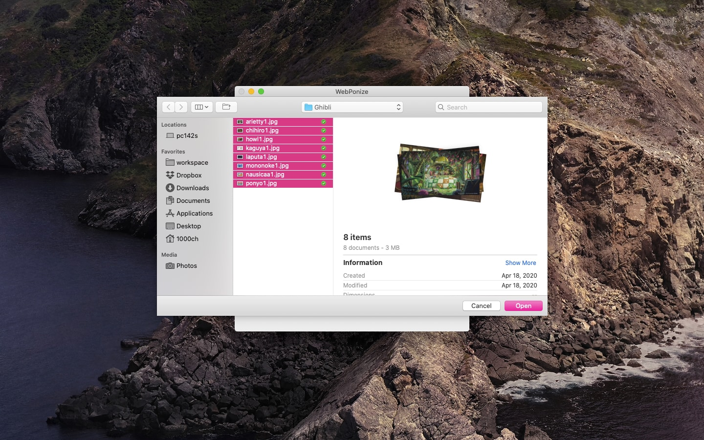
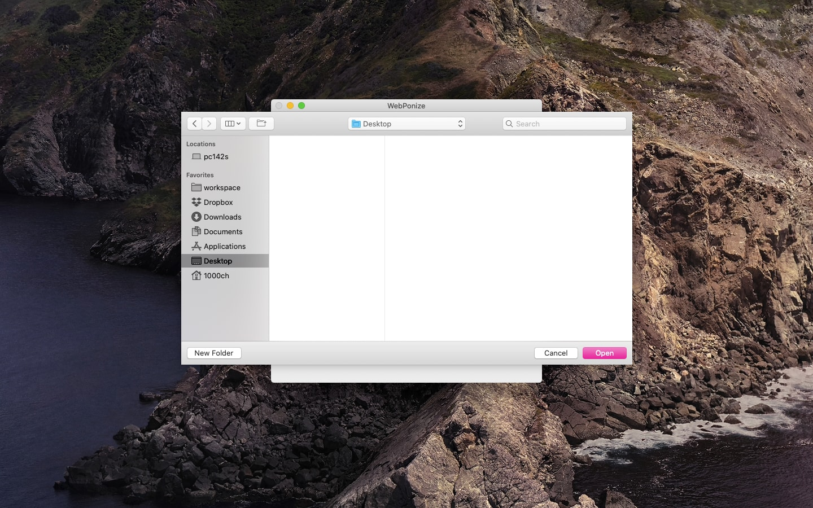
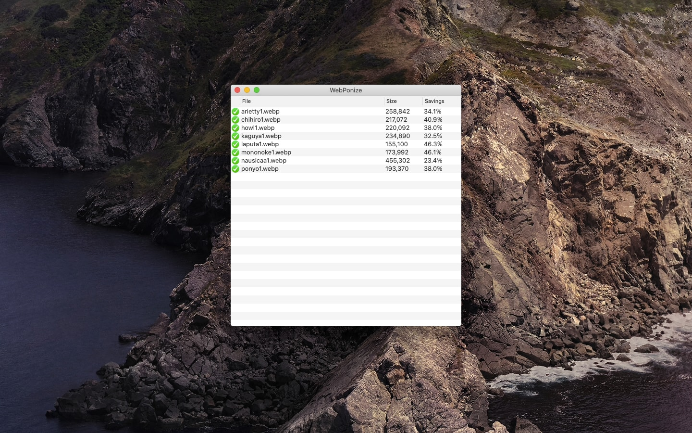

WebPonize
macOS application that converts images to WebP.
Install

Usage
To convert, either:
- Drag and drop the images onto the application window or the Dock icon.
- Use "Open" in the "File" menu to choose the images to convert.
- Right-click the images in Finder and select WebPonize from the "Open With" menu.
1. Select image files to convert
2. Choose destination to put converted files
3. Wait for conversion process
Product Hunt